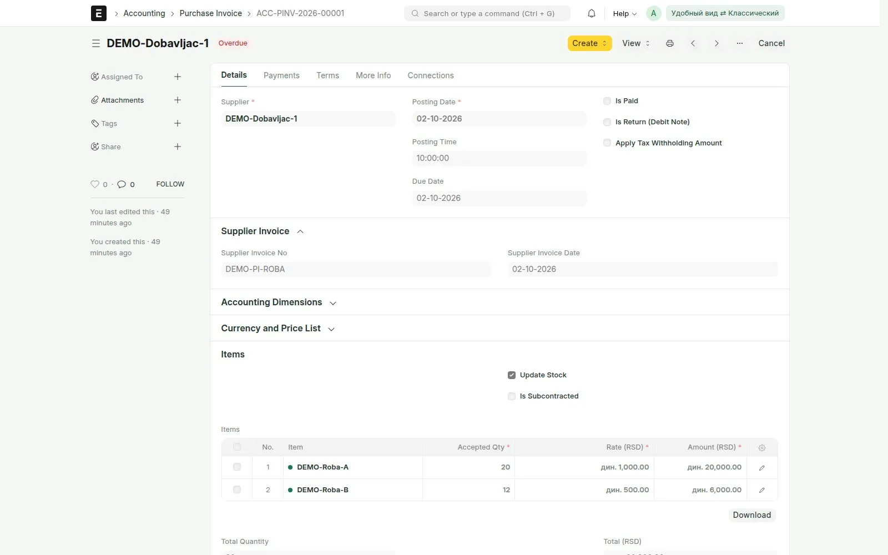
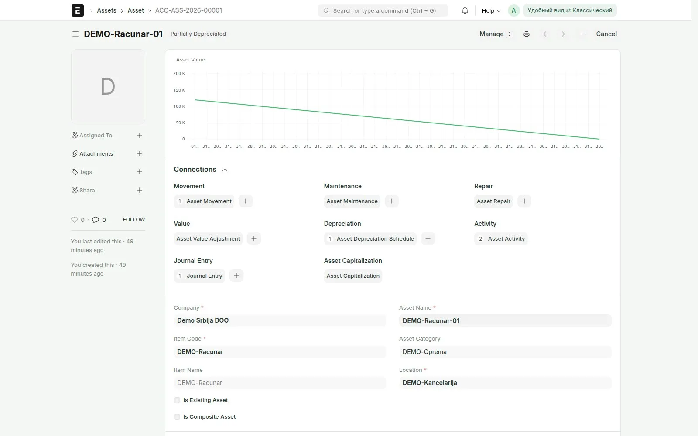
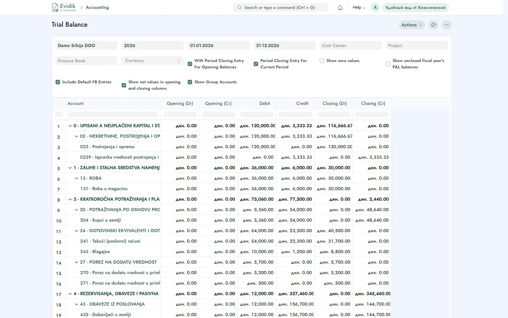
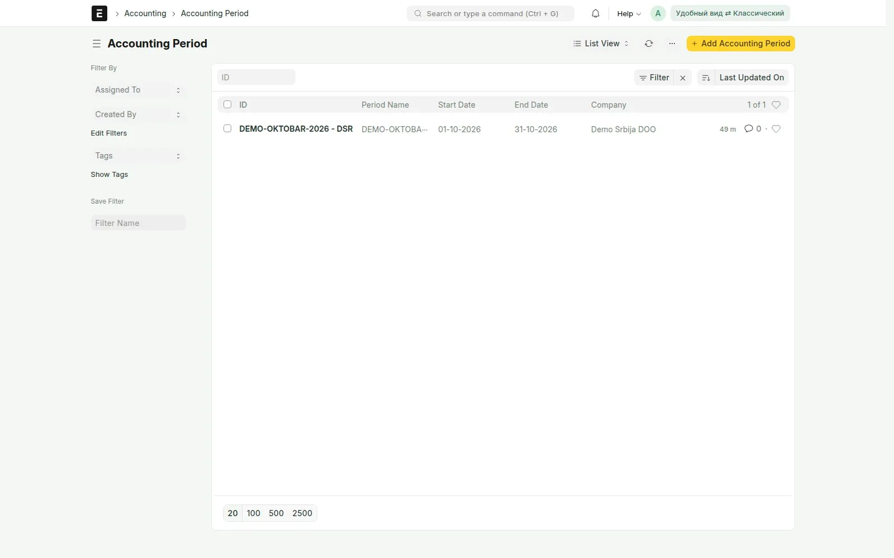

Mogućnosti
Šta Evidik ume danas
Deset mogućnosti proverenih u demo bazi. Ekrani su pravi, podaci su demonstracioni.
1
Radna površina „Moj dan“
Knjigovođa vidi ceo dan na jednom ekranu.
- Nacrti, fakture posle roka, računi za plaćanje
- Poreski kalendar za godinu
- Limiti za paušal i PDV
2
Kontni okvir 89/2020
Program sam podešava kontni okvir pri otvaranju firme.
- Klase 0–9 po srpskim pravilima
- Saldo po svakom kontu
- Grupe se skupljaju i otvaraju

3
Prodaja sa PDV-om i SEF
Faktura kupcu sa PDV-om 20 % ili 10 % i datumom prometa.
- Slanje u SEF: UBL 2.1 + CIUS-RS
- Provera šeme pre slanja
- Povrati i fakture posle roka

4
Nabavka
Ulazna faktura dobavljača sa PDV-om i prijemom robe.
- Broj i datum fakture dobavljača
- Prijem robe u magacin
- Računi za plaćanje na radnoj površini

5
Glavna knjiga
Sva knjiženja za period sa filterom po kontu i partneru.
- Filter po kontu, partneru, dokumentu
- Prelaz u dokument iz reda
- Početno i krajnje stanje

6
Osnovna sredstva
Kartica osnovnog sredstva i plan amortizacije.
- Stavljanje u upotrebu
- Amortizacija po planu
- Program sam pravi knjiženja

7
Zarade
Obračun zarade, poreza i doprinosa sa knjiženjima.
- Obračunski list po zaposlenom
- Porez i doprinosi
- Kompletan srpski obračun sa PPP-PD je u izradi

8
Bruto bilans
Bruto bilans po svim kontima za bilo koji period.
- Početno i krajnje stanje
- Promet duguje i potražuje
- Zbir po grupama konta

9
Bilans stanja i bilans uspeha
Bilansi na osnovu podataka iz knjiga.
- Imovina, obaveze, kapital
- Dobitak i gubitak perioda
- Grafikon po mesecima

10
Zaključak perioda
Posle zaključka dokumenti se ne mogu menjati unazad.
- Period se zaključava jednim dugmetom
- Izmene unazad su blokirane
- Pomoćnik za zaključak meseca je u izradi

Zalihe
Prijem, otpis, popis. Vrednost zaliha se slaže sa knjigama.
Banka i blagajna
Plaćanja, avansi, obračun sa kupcima i dobavljačima.